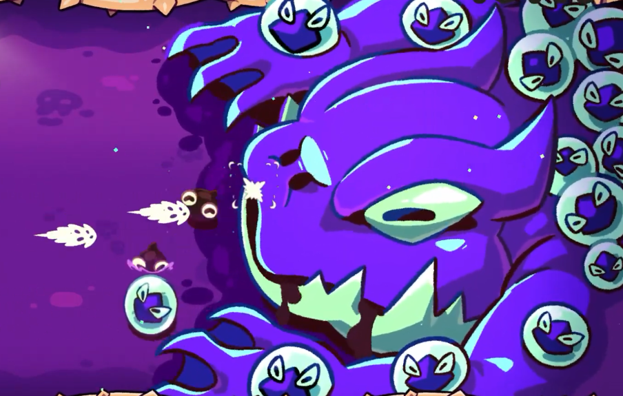
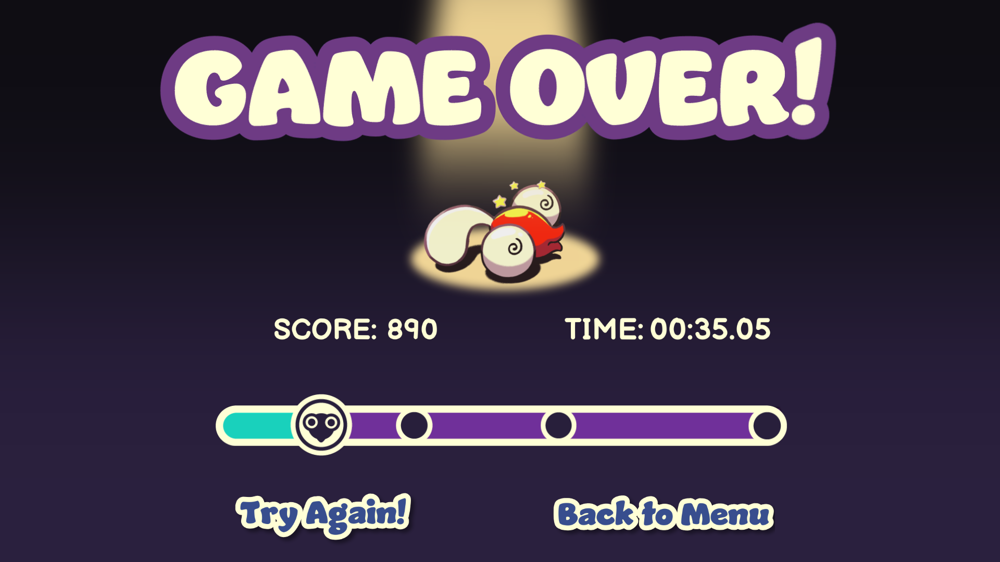
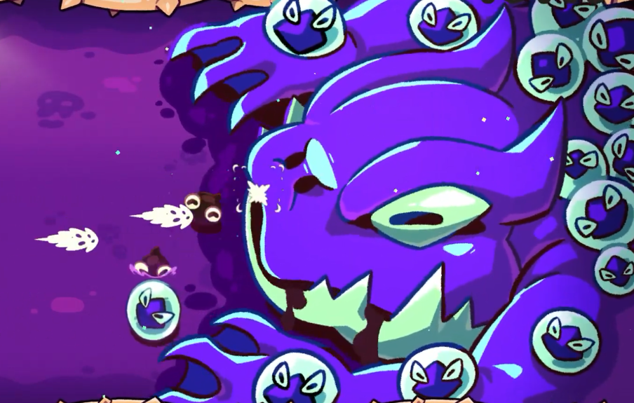
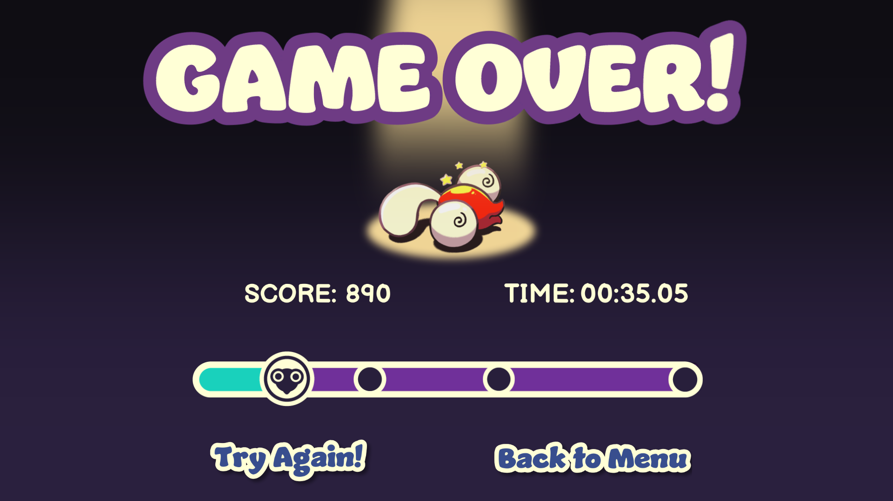
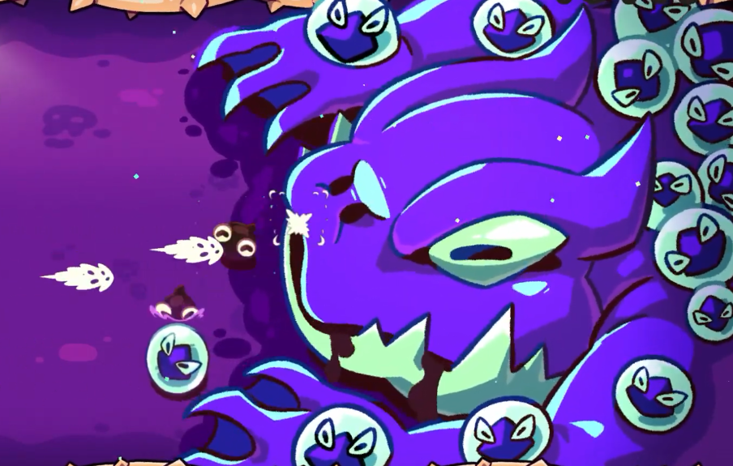
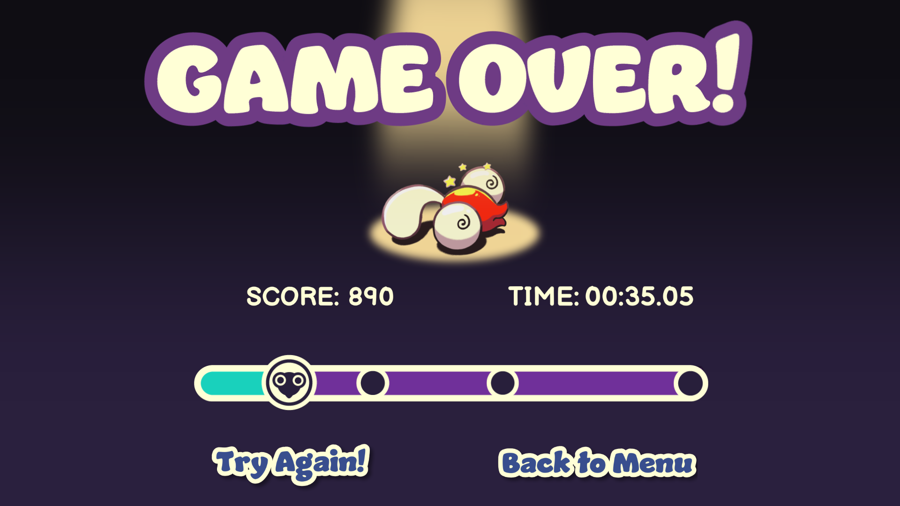

Tadpole Tales has a simplistic world. It is set in a river that the tadpole linearly travels along each attempt. You continue exploring until you defeat the final boss, the Great Toad. While this may seem bland, the developer includes various features to the environment to make it look interesting and memorable. There are various assets that make the world seem lively, such the constantly scrolling jungle background on the edges of the screen and the fluid water animation, creating an illusion of the tadpole travelling along the river. In addition, the vibrant colors, energetic music, smooth hand-drawn animations, and the inhabited branches that appear when a boss is defeated portray a lively world.
The character that you utilize in Tadpole Tales is a small tadpole. In the plot, three corrupted animals have decided to pollute the tadpole's river and the lone tadpole is tasked with cleaning it. While this may not seem much, the tadpole has the interesting ability to evolve when it collects and maintains a certain number of hearts, which changes its form and grants it new abilities that remain if it does not get damaged by any enemies. The first form, which is obtained if you collect and maintain 3 hearts, grants the tadpole faster shooting speed. Meanwhile, the second form, which is obtained if you collect and maintain 4 hearts, grants the tadpole a triple shot ability but increases its hitbox due to its change into a frog form.
In Tadpole Tales, the player controls the tadpole with either the WASD or arrow keys and shoot bullets by holding the space bar. There is not really any beneficial objects the player is able to interact aside from hearts, which drops from certain enemies and is also the only collectible in the game. Aside from hearts, everything else the player can interact with are the NPCS, which are either neutral or hostile towards the tadpole. For the corrupted organisms, they attempt to attack the player by either shooting ooze at them or by laying ooze traps on the river. With bosses, they instead attack the player by shooting multiple bullets and laying traps at them. Meanwhile, bugs can also be hostile and dangerous if not carefully watched, laying traps and hurting the player if they touch them as they fly by. However, there is an exception, which is the golden dragonfly, which flies by quickly and is guaranteed to drop a heart if defeated by the player before it flies off the map.


In Tadpole Tales, the player is tasked with cleaning up the polluted river and saving the population from the corruption brought upon by the three tainted bosses. You navigate through the river, attempting to clean the animals of pollution by shooting bullets at them while trying to prevent yourself from being corrupted by them, where reaching the end takes around 10 minutes. If you lose, the whole game restarts from the beginning. As you travel along the way, the amount of enemies that appear on the screen increase along with with the addition of new enemies with increasingly dangerous abilities, exponentially making the game harder. You must also defeat the three tainted bosses. Once you defeat them, the river is purified and you win. The main challenge from the enemies are their unpredictable and rapid attack patterns and sometimes unclear attacks if various projectiles were on the screen. This was sometimes very frustrating to experience, as good attempts would quickly lead to a loss and then you would end up at the beginning, repeating this same cycle until that one successful attempt is achieved or a rage quit would happen.
Tadpole Tales is a game I would probably only recommend to kids. The game's appealing graphics, basic controls, and infinite replayability makes the game easy to understand and enjoy for a long while. However, people who are older will quickly notice how frustrating the game is and begin to realize it is a waste of time if they never make it to the end. the game's various flaws, such as randomized attack patterns and unclear attacks the enemies utilize make it difficult to survive even if you play cautiously. There is also a lack of features, such as a lack of power-ups or checkpoints. Understandably, this would lead to people quickly losing interest.